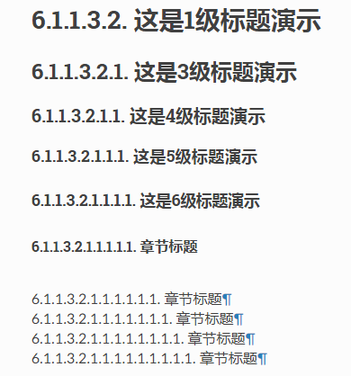

3.1. 1 基础语法¶
目录
3.1.1. 1.1 标题学习¶
在文本下一行（或上一行）添加至少与文本长度同宽的符号，即可以使文本成为标题。但并没有规定某一个级别的标题必须用什么字符，可以参考python文档的一些约定:
文档树元素：章节、标题
章节通过其标题识别，在标题文本下使用下划线进行标记或下划线和匹配的上划线。下划线/上划线是单个重复的标点字符，从左边第一列开始最少到与文档标题右边对齐。具体来说，一个下划线/上划线字符可以是任何非字母打印7位ASCII字符 [1] 。当使用上划线时，上划线的长度与使用的字符必须与下划线相同。可以有任意数字级别的章节标题，但某些输出格式可能有限制（HTML只有6级标题）。
| [1] | 下面是有效的章节标题装饰字符: ! " # $ % & ' ( ) * + , - . / : ; < = > ? @ [ \ ] ^ _ ` { | } ~
有一些字符比其他字符更适用，建议使用它们: = - ` : . ' " ~ ^ _ * + #
|
相比强加一个固定数字和顺序的章节标题装饰风格，其执行的顺序是碰到每个标题的先后顺序。碰到的第一种类型是最外层标题（如HTML H1），第二种类型则成为子标题，第三种将成为子子标题，以此类推。
样例展示：
标题显示结果：
注解
下面的标题顺序和上面显示的测试样例顺序一致。经测试是哪个标记放在最前面哪个就是一级标题。所以，在同一个项目中自己可以根据习惯定义哪个是一级标题。但是建议一个项目中的标题顺序使用相同的。这样方便查阅。
上面换行功能实现方法，以下是rST源码显示样例:
========
章节标题
========
--------
章节标题
--------
章节标题
========
章节标题
--------
章节标题
````````
章节标题
''''''''
章节标题
........
章节标题
~~~~~~~~
章节标题
********
章节标题
++++++++
章节标题
^^^^^^^^
3.1.2. 1.2 段落学习¶
我把一些rST的模块整理到了这个段落学习阶段。方便掌握。
段落学习分为以下4部分：
- 空格、缩进、空行使用
- 段落
- 过渡
- 评论
- 注释
3.1.2.1. 1.2.1 空格学习¶
- 段落是被空行分割的文字片段，左侧必须对齐（没有空格，或者有相同多的空格）。缩进的段落被视为引文。
- 空格进行缩进 ，但tab也可以使用。tab会转换为空格。tab会停在每个第八列。其他空白字符（form feeds [chr(12)] and vertical tabs [chr(11)]）会在处理前转为单个空格。
- rST中如果想手动换行。需要换行后再空一行才能实现转换的HTML换行功能。
样例展示：
展示换行功能
这一行上面空了一行。现在换行成功。
上面换行功能实现方法，以下是rST源码显示样例:
展示换行功能
这一行上面空了一行。现在换行成功。
3.1.2.2. 1.2.2 段落学习¶
这里的段落不再是没有规则的顶头写，然后一段一段中间空一行的段落。而是单独的一种段落格式。
段落包含没有任何标记指向其他正文元素的左对齐文本块。使用空行分隔段落及其他正文元素。段落可以包含 行内标记 。
样例展示：
| 这一第一段落。这个段落也不是很大。但是也不小。这里面也可以有其他格式。 |
段落样例，显示列表
|
上面换行功能实现方法，以下是rST源码显示样例:
+------------------------------------------------------------------------------------------+
| 这一第一段落。这个段落也不是很大。但是也不小。这里面也可以有其他格式。 |
| |
+------------------------------------------------------------------------------------------+
+------------------------------+
| 段落样例，显示列表 |
| - 无序列表 |
+------------------------------+
3.1.2.3. 1.2.3 缩进¶
缩进是用来表示引用块、定义（在定义列表项中）和本地嵌套内容的唯一重要标示:
- 列表项内容（列表项多行内容和一个列表项中多个正文元素包括嵌套列表）
- 文本块的内容
- 显式标记块的内容
- 任何文本的缩进少于当前级别，会结束当前级别的缩进
因为所有的缩进都是重要的标志，因此缩进的级别应当一致。
样例展示：
这是一个顶级段落。
本段落属于一级引用块。
一级引用块的第二段。
一级引用第三段。这三段的缩进都是相同的。
上面换行功能实现方法，以下是rST源码显示样例:
这是一个顶级段落。
该段落属于一级引用块。
一级引用块的第二段。
一级引用第三段。这三段的缩进都是相同的。
也可以有以下理解：
+------------------------------+
|顶级/上一级段落 |
+------------------------------+
| 这是缩进的段落，上面空一行 |
| - 无序列表 |
+--------------------------+
3.1.2.5. 1.2.5 注释¶
样例展示：
下面有5行注释内容，没有显示
上面换行功能实现方法，以下是rST源码显示样例:
下面有5行注释内容，没有显示
..
这整个缩进块都是
一个评论.
仍是一个评论.
3.1.2.6. 1.2.6 过渡¶
文档元素：过渡
取代小标题，段落之间的额外空间或类型装饰符可用来标记文本分隔或主 题或重点的改变。
(The Chicago Manual of Style, 14th edition, section 1.80)
过渡常见于小说，作为一个跨越一行或多行的间隙，有或没有类似于一行星号的类型装饰符。过渡分隔其他正文元素。过渡不应开始或结束一个章节或文档，两个过渡也不应该直接相邻。过渡标记的语法是一排**至少4个重复的标点符号**。该语法与章节标题下划线一样。过渡标记前后需要空行。
不像章节标题下划线，章节标题不需要体系结构。建议使用同一种风格。处理系统可以以任何其希望的方式在输出中渲染过渡。如，HTML中的<hr>输出是一种明显的选择。
样例展示：
段落一，下面有横线，这个横线就是过渡。
段落二，上面有横线，这个横线使得段落一和段落二分割明显。
上面换行功能实现方法，以下是rST源码显示样例:
段落一，下面有横线，这个横线就是过渡。
----
段落二，上面有横线，这个横线使得段落一和段落二分割明显。
3.1.3. 1.3 列表学习¶
列表分为以下几种：
- 无序列表
- 有序列表
- 定义列表
- 字段列表
以上三种列表的列表项正文必须与bullet缩进左对齐。文本紧接在bullet分隔符之后。简单理解就是相同级别的序号前面的引导字符要缩进相同。
3.1.3.1. 1.3.1 无序列表¶
以一个 “*”, “+”, “-“开头，后面根一个空格的文本块是一个无序列表项。
样例展示：
样例1：
- 这是无序列表1
- 这是无序列表2
- 这是子序列1
- 这是无序列表
样例2：
- 这是无序列表1
- 这是无序列表2
- 这是子序列1
- 子序列2
- 这是无序列表
上面换行功能实现方法，以下是rST源码显示样例:
样例1：
- 这是无序列表1
- 这是无序列表2
- 这是子序列1
-这是无序列表
样例2：
- 这是无序列表1
- 这是无序列表2
1. 这是子序列1
#. 子序列2
-这是无序列表
3.1.3.2. 1.3.2 有序列表¶
有序列表与无序列表类似，但是用序号而非圆点。序号包含有序成员和格式，之后跟着空格。以下有序序列可以识别:
- 任意数字：1 2 3 … (无上限)
- 大写字母：A B C … Z
- 小写字母：a b c … z
- 大写罗马数字：I II III IV … MMMMCMXCIX(4999)
- 小写罗马数字：i ii iii iv … mmmmcmxcix(4999)
- 另外，自动编号符”#”可以用于自动编号列表。自动编号列表可以以显示的编号开始设置序列。完整的自动有序列表使用以1开始的任意数字(自动有序列表为 Docutils 0.3.8新增)
以下格式可以识别：
- 以点为后缀：”1.” “A.” “a.” “I.” “i.”
- 以括号包围：”(1)” “(A)” “(a)” “(I)” “(i)”
- 以右括号为后缀：”1)” “A)” “a)” “I)” “i)”
- 解析一个有序列表时碰到下列情况，会开始一个新列表：
- 碰到与当前列表序号的类型和格式不一致的序号（如，”1.”和”a.”分属两个列表）
- 序号不在序列内有序（如，”1”、”3”产生连个独立的列表）
注解
建议使用1 (“1”, “A”, “a”, “I”, or “i”)作为第一个列表项的序号。当然以其他的数字开始也会被识别，但输出格式可能不支持。任何不以传统的1开始的列表都会生成一个一级[info]系统信息。
使用罗马数字的列表必须以”I/i”或一个多字符值如”II”或”XV”开始。任何其他单字符罗马数字（”V”, “X”, “L”, “C”, “D”, “M”）会被解释为一个字母而非罗马数字。 同样，使用字母开始的列表不能使用”I/i”，因为其会被识别为罗马数字1。
样例展示：
样例1：
- 这是无序列表1
- 这是无序列表2
- 这是子序列1
- 子序列2
- 这是无序列表
样例2：
- 这是无序列表1
- 这是无序列表2
- 这是子序列1
- 子序列2
- 这是无序列表
上面换行功能实现方法，以下是rST源码显示样例:
样例1：
1. 这是无序列表1
#. 这是无序列表2
i. 这是子序列1
#. 子序列2
#. 这是无序列表
样例2：
A. 这是无序列表1
#. 这是无序列表2
a. 这是子序列1
#. 子序列2
#. 这是无序列表
3.1.3.3. 1.3.3 定义列表¶
每个定义列表项包含一个术语、可选的分类器和一个定义i。术语是一个简单的一行单词或句子。可选的分类器与术语在同一行，跟在它后面。每个分类器跟在一个行内”:”(空格冒号空格)之后。定义是一个块通，过缩进与术语联系，可以包含多个段落和其他正文元素。术语与定义块之间不允许有空格（这区分了定义列表与 引用块 ）。定义列表第一行之前和最后一行之后需要空行，中间的列表项是否空行是可选的。
行内标记在术语行被解析，在分类器分隔符(”:”)被识别之前。分隔符仅在出现在任何行内标记之外时被识别。
定义列表可用于多种用途，包括:
- 作为一个字典或术语表。术语是单词本身，分类细可用于根据用途分类术语（动词、名词等等），定义跟在后面。
- 用于描述程序变量。术语是变量名，分类器用于区分变量类型（字符串、整形等等），定义描述变量在程序中的用法。定义列表的该用途支持分类器语法 Grouch ，一种描述和执行Python对象约束的系统。
样例展示：
- 术语 1
- 定义 1.
- 术语 2
定义 2, 段落 1.
定义 2, 段落 2.
- 术语 3 : 分类器
- 定义 3.
- 术语 4 : 分类器 1 : 分类器 2
- 定义 4.
上面换行功能实现方法，以下是rST源码显示样例:
术语 1
定义 1.
术语 2
定义 2, 段落 1.
定义 2, 段落 2.
术语 3 : 分类器
定义 3.
术语 4 : 分类器 1 : 分类器 2
定义 4.
语法图:
+----------------------------+
| term [ " : " classifier ]* |
+--+-------------------------+--+
| definition |
| (body elements)+ |
+----------------------------+
3.1.3.4. 1.3.4 字段列表¶
字段列表作为扩展语法的一部分被使用，如 指令 的选项或等待进一步处理的类数据库记录。它们也被用于两列类列表结构类似于数据库记录（标签和数据对）。reStructuredText应用可以在特定上下文中识别字段名和变形字段或字段正文。例如，阅读下面的 目录字段 或 指令 中的 “图片“和”元” 指令 .
字段列表会映射字段名到字段正文，仿照 RFC822 头。一个字段名可以包含任何字符，但字段名中的冒号(”:”)必须使用反斜杠转义。行内标记被解析为字段名。在进一步处理或传输时，字段名大小写敏感。字段名. 字段名与一个单独的冒号前后缀一起构成字段标记。字段表及之后跟空格和字段正文。字段正文可以包含多个正文元素，缩进到字段标记处。字段名标记之后的第一行决定字段正文的缩进。
一个多单词字段名中的单个词的解释是应用程序。该应用程序可以为该字段名指定一个语法。例如，第二个单词及其后面的单词可以被视为“参数”，引用短语可以被视为一个单一的参数，并可能会增加直接支持“键=值”的语法。
除了潜在的可能导致误解的标准 RFC822 标题不能用于这种构造是因为它们模糊不清。以一个单词后面跟一个冒号开始一行是一种通用的书写文本。然而，在定义良好的上下文如当一个字段列表总是在文档的开头（PEPS和电子邮件）时，标准RFC822头可以使用。
当一个字段列表是文档的第一个非注释元素时(只在文档标题之后，如果有)，它可以从字段转换为文档目录数据。这个目录数据对应一本书的封面，如标题页和版权页。
特定的注册过的字段名(见下表)会被识别并转换为对应的文档树元素，大部分会变为”docinfo”元素的子元素。对于这些字段，没有顺序要求，但它们会被重新组织以适应文档的结构。 除非另有说明，每一个目录元素的字段正文只能包含一个段落。字段正文会被 RCS关键字 检查和清理。任何不能识别的字段会被作为通用字段保留在docinfo元素中。
注册过的目录字段名和它们对应的文档树元素如下:
- 字段名 “Author”: 作者元素
- “Authors”: 作者.
- “Organization”: 组织.
- “Contact”: 联系方式.
- “Address”: 地址.
- “Version”: 版本.
- “Status”: 状态.
- “Date”: 日期.
- “Copyright”: 版权.
- “Dedication”: 主题.
- “Abstract”: 主题.
- “Authors”字段可以包含: 一个包含作者列表（冒号或逗号分隔）的段落；或一个无序列表，其每个元素包含一个单独的段落每作者。首先检查”;”，因此”Doe, Jane; Doe, John”是可以的。如果单个饼子包含逗号，使用分号结束它: ”:Authors: Doe, Jane;”。
“Address”字段用于多行邮件地址。新行和空格会被保留。
“Dedication”和”Abstract”字段可以包含任意正文元素。每种一个。它们会称为紧跟在docinfo元素之后的使用”Dedication”或”Abstract”标题（或语言相等）的主题元素。
这个字段名到元素的映射可以替换为其他语言。详见 文档信息转换 实现文档。
未注册/通用字段可以包含一个或多个段落或任意正文元素。
样例展示：
| Date: | 2001-08-16 |
|---|---|
| Version: | 1 |
| Authors: |
|
| Indentation: | 因为字段标记可能很长，字段正文的第二行 及随后的行不必与第一行对齐，但必须缩进到字段名标记 处，且它们应当互相对齐。 |
| Parameter i: | integer |
上面换行功能实现方法，以下是rST源码显示样例:
:Date: 2001-08-16
:Version: 1
:Authors: - Me
- Myself
- I
:Indentation: 因为字段标记可能很长，字段正文的第二行
及随后的行不必与第一行对齐，但必须缩进到字段名标记
处，且它们应当互相对齐。
:Parameter i: integer
语法图(简化):
+--------------------+----------------------+
| ":" field name ":" | field body |
+-------+------------+ |
| (body elements)+ |
+-----------------------------------+
3.1.4. 1.4 文本块学习¶
样例展示：
样例1：
这是正常段落，后面是文板块。:
这是文本块。
上面换行功能实现方法，以下是rST源码显示样例:
这是正常段落，后面是文板块。::
这是文本块。
也可以有以下理解：
+-----------------------------------------------------+
|段落文本，后面需要添加英文两个连续冒号:: |
+-----------------------------------------------------+
| 与上面一行之间空一行。然后按照这个缩进。 |
| 这就是文板块 |
+--------------------------------------------------+
3.1.5. 1.5 字体相关学习¶
常见可以设置种类有：
- 粗体
- 斜体
- 加红
- 类似标题
样例展示：
样例：
粗体
斜体
1旁边按键字符
这是rubric格式
上面换行功能实现方法，以下是rST源码显示样例:
**粗体**
*斜体*
``1旁边按键字符``
.. rubric:: 这是rubric格式